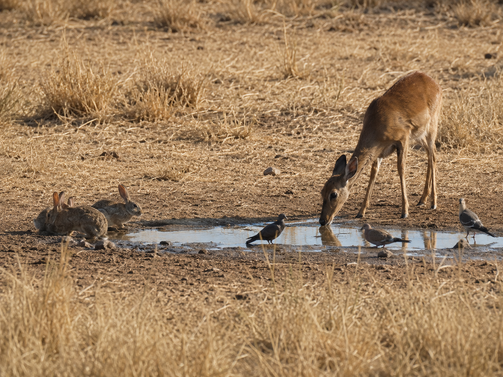

Hold this question in your mind as you work. By the end, you should be able to answer it with evidence.
Look at the photograph below. Several different animals are gathered in the same small spot. Before reading anything else, just look carefully.
There are no wrong observations. Scientists start by looking and asking questions. We'll come back to yours at the end of the lesson.
These are the words scientists use when they talk about survival and habitats. Tap each card to flip it and read the definition. You'll see these words throughout the lesson.
Copy this sentence carefully into your science notebook:
"When a habitat cannot provide what an organism needs, that organism may survive less well — or not at all."

Every living thing needs certain resourcesresourceSomething an organism needs to live — food, water, shelter, space, or air. to stay alive. These are food, water, shelter, space, and air. When a habitathabitatThe place where an organism lives and finds what it needs. provides all of these, an organism can thrive.
When even one resource is hard to find, survival gets harder. That's where things get interesting for scientists.
A limiting factorlimiting factorSomething that makes survival harder by reducing a needed resource. is anything that makes survival harder. It limits how well an organism can live in a place.
Limiting factors can look different depending on the habitat. Too little water. Not enough food. Very little shelter. Weather that's too hot, cold, wet, or dry. Any of these can tip the balance.
When a limiting factor is present, some organisms survive less well. Some may move to a better habitat. Others may not survive at all.
When two organisms need the same limited resource, they competecompetitionWhen two or more organisms need the same limited resource in the same place. for it. Competition isn't always a fight. It just means both organisms need the same thing, and there isn't enough for both.
The organism that finds enough usually survives better. The one that can't find enough may survive less well — or may need to move somewhere else.
Real-World Connection: In the photo, rabbits, a deer, and birds all need water from the same tiny puddle. That's competition — driven by a limiting factor.
When a habitat provides all of an organism's basic needs, that organism can survive well there. When even one resource runs short, that shortage becomes a limiting factor — and survival gets harder.
Scientists look at the needs of an organism and the resources of a habitat to build an argument about survival.
Curious? Go Deeper
What is a watering hole, really? Scientists who study animal behavior are fascinated by spots like the one in that photo. When water becomes a limiting factor, it acts like a magnet — pulling every animal in the area to the same spot. Scientists call these "watering holes," and they're one of the best places to observe competition in action.
Here's something worth thinking about: at a watering hole, bigger animals don't always drink first. Social structure, time of day, and even individual boldness all play a role. A tiny bird might drink while a large predator waits at the edge. Competition is complicated.
Scientists also use limiting factors to predict where populations of animals will be largest — and smallest. If you know where the water and food are, you often know where the animals are. That's why wildlife biologists map resources, not just animals.
You'll need: Science notebook, pencil, this lesson page. You'll be reading, thinking, and writing — this is a notebook investigation.
Scientists argue about survival using evidence. They look at what an organism needs, then look at what a habitat provides. Then they make a case. That's what you'll do today.
Choose an organism. Pick one: a rabbit, a deer, a hawk, a frog, or a cactus wren. Write your choice in your notebook.
List its survival needs. Write the four resources your organism must have: food, water, shelter, and space. Add one more detail — what kind of food? What kind of shelter?
Check Habitat A — a green forest meadow with a stream, tall grass, trees, and many insects and small animals.
For each resource your organism needs: does this habitat provide it? Check yes or no in your notebook. Then decide: survive well, less well, or not at all?
Check Habitat B — a dry, rocky hillside with very little rain, sparse dry grass, no steady water source, and few plants.
Do the same check. Which resources are missing or limited? Is there a limiting factor? What would you call it?
Write your survival argument. For each habitat, write 2–3 sentences. Name the resources available, name any limiting factors, and make your case: would your organism survive well, less well, or not at all? Use evidence.
After you finish both habitats, answer these in your notebook:
🔍 Part A — Identify
Use the photo from the lesson and what you learned to answer these.
🚀 Part B — Short Answer
Answer each question in complete sentences. Use your vocabulary words.
Think about the organism you investigated in the Explore tab. Write about a habitat where it would survive well and one where it would survive less well or not at all.
What do you think?
💡 Start with: "I think [organism] would survive [well / less well / not at all] in [habitat] because…"
What did you observe or learn that supports your thinking?
💡 Start with: "I know this because the lesson showed / the photo showed…"
Why does that make sense?
💡 Start with: "This makes sense because the [limiting factor / resource]…"
Try to use at least 3 vocabulary words: limiting factor, resource, competition, habitat, evidence.
🎨 Part C — Draw & Label
In your science notebook, draw two habitats side by side.
Choose how you want to submit your work. Pick the option that works best for you.
Make sure your submission includes all of these: